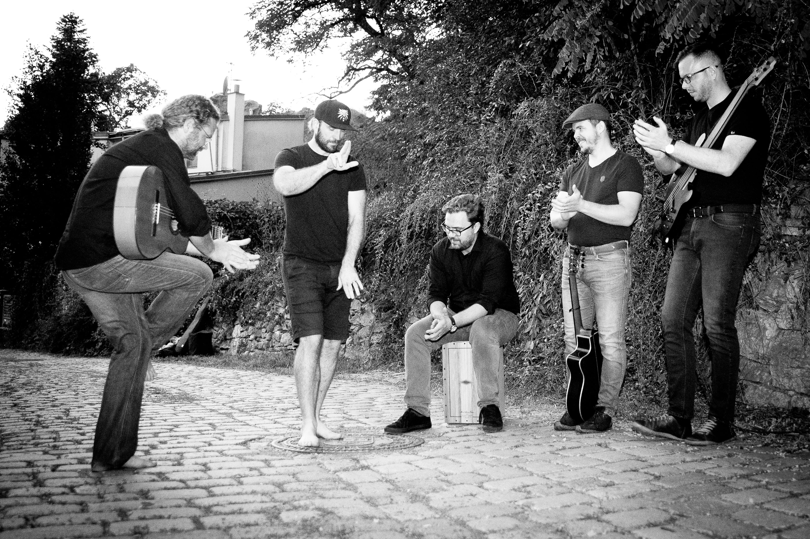
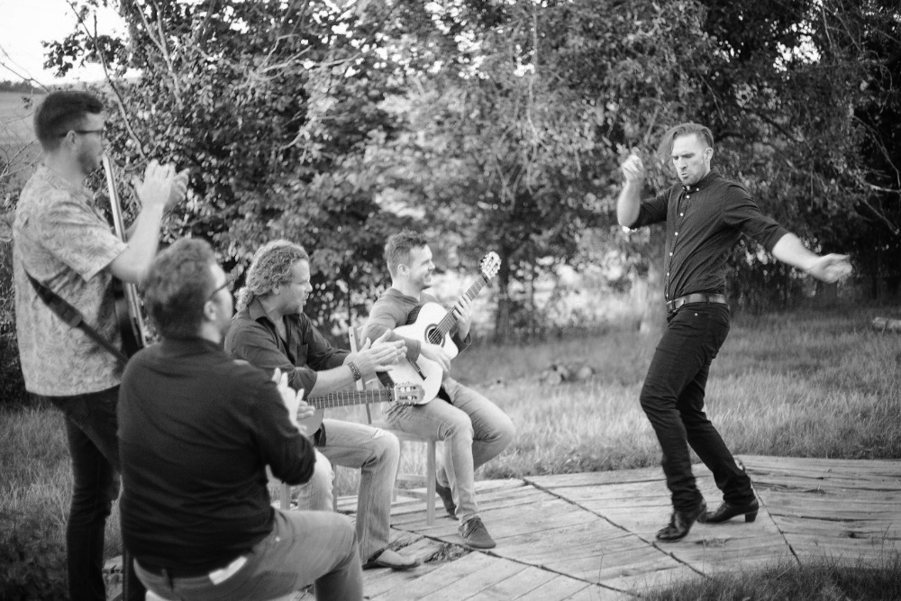
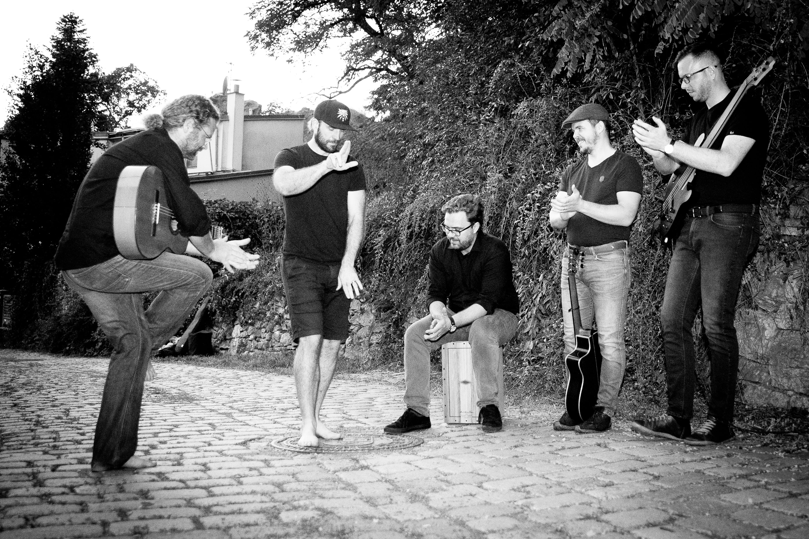
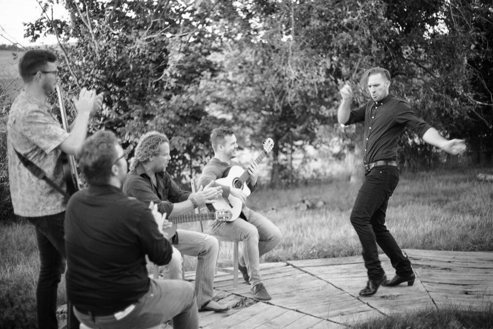

David Smrž - kytara
Základy klasické hry na kytaru získal u profesorky Marcely Kochové v Praze. Současně studoval tanec a pedagogiku. Jeho hudební a umělecký směr ovlivnilo setkání se španělským flamencem. V technice flamencové kytary objevil přirozený a komplexní způsob hry, který využívá všech odstínů a zvukových možností nástroje. Všestrannost a perkusivitu flamencové techniky začal využívat nejen k doprovodu tance a zpěvu flamenca, ale také ji s úspěchem adaptoval pro doprovod moderního a klasického tance a contemporary. Flamenco studoval u Fernanda Moreno en Jerez de la Frontera, u Carlose Zarate, Arturo Ruize, Rafaela Gómez a Jorge "El Pisao" v Granadě a u Valentína Rosa Carmona v Alicante. Vytvořil několik hudebních aranžmá pro divadlo, scénický tanec a rozhlas a vedl vlastní hudební skupiny Eshavira, Malý orchestr pro tango a DS3F flamenco fusión. V současnosti vystupuje jako sólista, nebo se svou flamenco - fusión skupinou FlamencaFe. V regionu, kde žije, se zabývá folklorem a jeho oživením se skupinou Jožkovy zraky.
 


